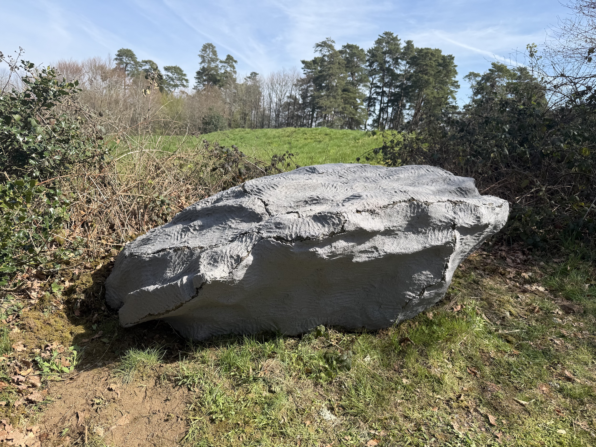
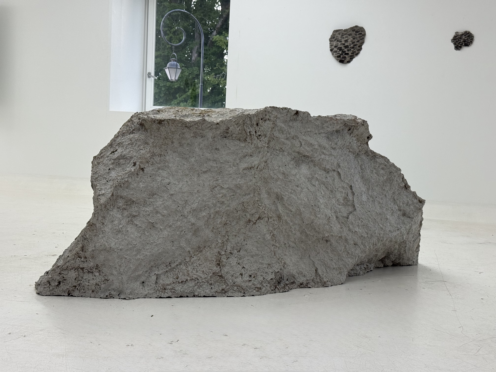
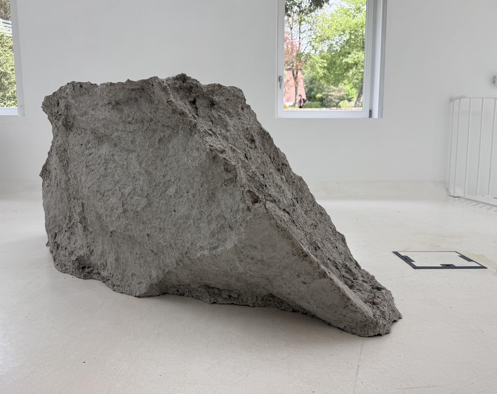
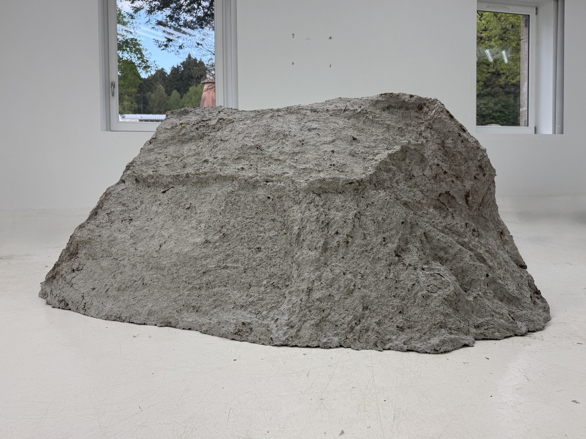
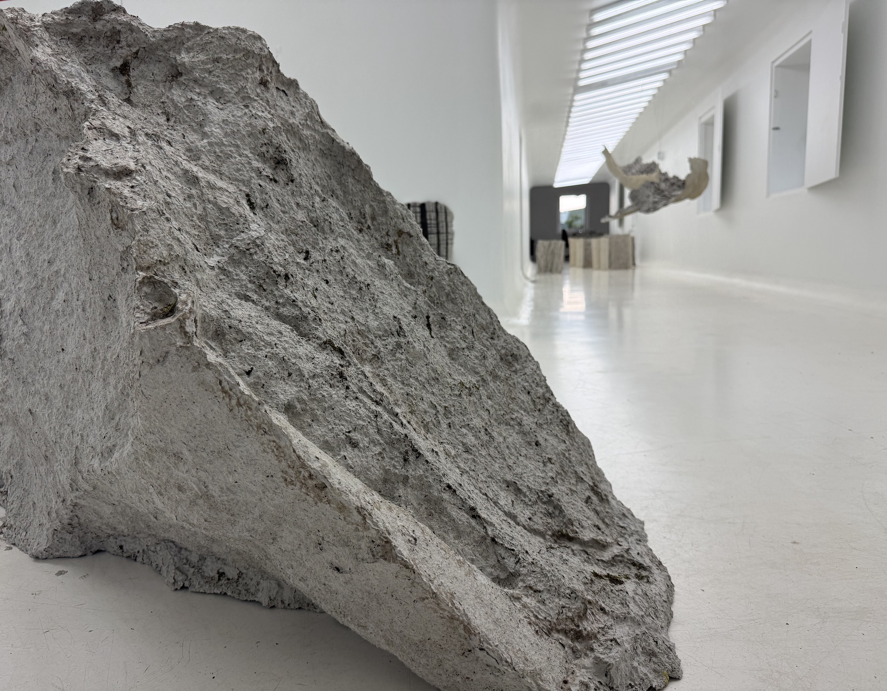

Roche en papier
Dans la continuité de mon travail autour de l’empreinte, j’ai réalisé le moulage direct d’une roche d’environ deux mètres de diamètre.
Face à la complexité de sa surface et à la profondeur de ses anfractuosités, j’ai procédé par fragments avant de les réassembler. Le papier conserve ainsi les reliefs, les creux et les irrégularités de la pierre.
La roche d’origine étant partiellement ancrée dans le sol, l’œuvre finale prend la forme d’une « roche en papier » dont la base tronquée témoigne de son incomplétude originelle. Cette configuration inverse la perception de la masse et donne l’impression que la roche est délicatement posée à la surface de l’eau.